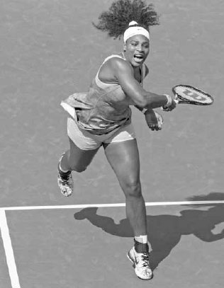
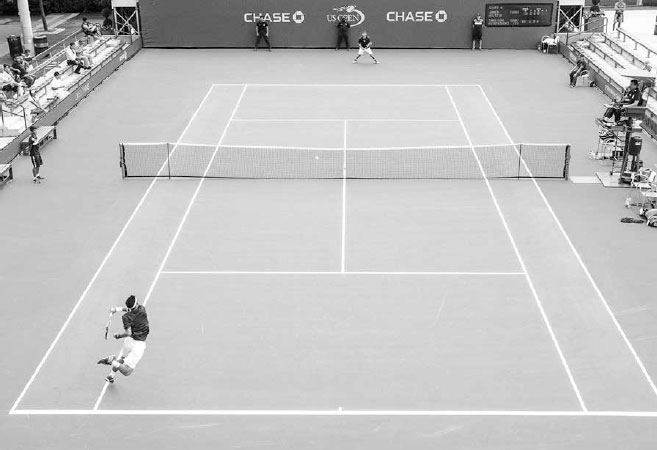
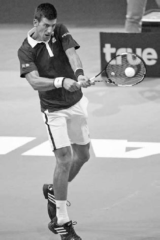
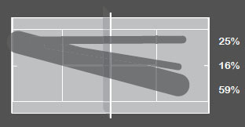

Đơn — Chiến thuật & Định vị¶
Trên đấu trường chuyên nghiệp, xu hướng của đối phương thường tinh vi và những điểm yếu thường rất kín đáo. Nhưng ở trình độ nghiệp dư, những đặc điểm này dễ nhận ra hơn, và những người chơi nghiệp dư thành công biết cách khai thác chúng. Trong các pha đôi công, họ chọn đúng cú đánh phù hợp với hoàn cảnh, và giữa các điểm bóng, họ suy nghĩ về những chiến thuật hiệu quả nhất để tăng cơ hội chiến thắng. Việc đưa ra kết luận đúng đắn ở những thời điểm này đòi hỏi không chỉ kiến thức sâu rộng về quần vợt, mà còn sự nhận thức về điểm mạnh, điểm yếu của bản thân và khả năng quan sát những đặc điểm tương tự ở đối phương.
Trong chương này, tôi sẽ giải thích các thành phần chiến thuật khác nhau của môn thể thao này để giúp bạn giành chiến thắng. Tôi bắt đầu với những lời khuyên về cách di chuyển khéo léo qua bốn giai đoạn thi đấu, đạt vị trí đứng sân tối ưu, thiết lập các mẫu hình cú đánh chiến thắng, và tăng số lỗi của đối phương trong khi hạn chế lỗi của chính mình. Sau đó tôi cung cấp các kế hoạch thi đấu để đánh bại những đối thủ phòng thủ và tấn công. Tiếp theo, tôi giúp bạn đặt đúng câu hỏi và hướng dẫn cách điều chỉnh chiến thuật trong trận đấu. Tôi kết thúc chương với một số gợi ý bài tập để làm mới các buổi luyện tập đánh đơn của bạn.
I. Bốn Giai Đoạn Thi Đấu¶
CHƠI QUẦN VỢT THÔNG MINH VỀ MẶT CHIẾN THUẬT nghĩa là chọn đúng cú đánh trong \"bốn giai đoạn thi đấu\" xảy ra trong một pha đôi công: giai đoạn tấn công, giai đoạn xây dựng, giai đoạn trung lập, và giai đoạn phòng thủ.
Ở một số điểm bóng, một cú giao bóng mạnh hoặc cú đỡ giao bóng mạnh sẽ giúp bạn bắt đầu pha bóng ở giai đoạn tấn công, nơi bạn hy vọng sẽ duy trì được. Mặt khác, nếu bạn đang nhận một cú giao bóng nhanh, bạn có thể bắt đầu điểm bóng ở giai đoạn phòng thủ rồi cố gắng chuyển sang một giai đoạn thuận lợi hơn. Với hầu hết người chơi nghiệp dư, những người thường không có cú giao bóng hay đỡ giao bóng vượt trội, hầu hết các điểm bóng bắt đầu ở giai đoạn trung lập rồi tiến lên hoặc lùi xuống giữa các giai đoạn từ đó.
Trong một pha đôi công, bạn có thể bắt đầu ở giai đoạn tấn công rồi đối phương đánh một cú phòng thủ tuyệt vời và cục diện điểm bóng thay đổi. Khi điều đó xảy ra, bạn phải tái thiết lập và không nên mù quáng tiếp tục chơi tấn công chỉ vì bạn từng kiểm soát điểm bóng. Để chuyển đổi hợp lý giữa các giai đoạn, đôi khi bạn cần kiên nhẫn và kiên định. Những lúc khác, bạn cần cảnh giác và sẵn sàng chớp lấy cơ hội.
Điều quan trọng là nhận thức được điểm bóng đang tiến triển qua các giai đoạn như thế nào để biết độ cao, tốc độ, và độ xoáy phù hợp cần dùng cho cú đánh của mình. Vì các giai đoạn khác nhau cần những cú đánh khác nhau, những tay vợt có sự đa dạng trong các cú đánh của mình có lợi thế khi chuyển đổi trôi chảy giữa các giai đoạn so với những người không có. Ví dụ, những tay vợt thiếu sức mạnh trên cú thuận tay có thể bị mắc kẹt ở giai đoạn trung lập hoặc xây dựng, hoặc một tay vợt không có cú thuận tay cắt chất lượng có thể gặp khó khăn khi chuyển từ giai đoạn phòng thủ sang giai đoạn trung lập. Ngoài ra, vì nhiều yếu tố ảnh hưởng đến cách bạn chuyển đổi qua bốn giai đoạn, bao gồm cách bạn tương tác với đối phương, vị trí đứng sân, và mặt sân, việc có nhiều lựa chọn cú đánh khác nhau có thể giúp bạn sử dụng phản ứng chiến thuật hiệu quả nhất với những yếu tố này trong mỗi giai đoạn.
Tất nhiên, vì mỗi người chơi khác nhau, tất cả các giai đoạn đều có ngoại lệ và những vùng \"xám.\" Ví dụ, một tay vợt tấn công như Serena Williams di chuyển qua các giai đoạn rất khác so với một tay vợt phản công như Caroline Wozniacki. Ngoài ra, một tay vợt có lối chơi toàn diện, chắc chắn nhưng không có vũ khí hay điểm yếu rõ ràng nên xây dựng điểm bóng kiên nhẫn hơn so với một tay vợt có nhiều biến hóa hơn về khả năng cú đánh. Để di chuyển thành công qua các giai đoạn, bạn cần phân tích lối chơi của mình và tuân theo mức độ tấn công cùng độ dài điểm bóng giúp bạn thắng tốt nhất.
Dưới đây là mô tả chi tiết hơn về từng giai đoạn cùng những gợi ý cần cân nhắc khi bạn di chuyển qua chúng trên sân.

Serena Williams là một tay vợt luôn tìm cách bước vào giai đoạn tấn công nhanh chóng trong một pha đôi công. Ở đây, cô đang ở đúng thế mạnh của mình khi chớp lấy một quả bóng cao phía trước vạch giao bóng.
1. GIAI ĐOẠN TẤN CÔNG¶
Giai đoạn tấn công xảy ra khi bạn có đủ thời gian chuẩn bị cú đánh, độ cao bóng tốt, và vị trí đứng sân thuận lợi. Giai đoạn tấn công từ cuối sân thường xảy ra với những quả bóng chậm hơn, ngắn hơn, nảy cao trên eo, nơi bạn dùng một cú đánh nền nhanh hơn, phẳng hơn. Những ví dụ tốt về các cú đánh giai đoạn tấn công là một cú thuận tay inside-out hoặc inside-in mạnh mẽ được đánh từ phía trước vạch cuối sân. Những ví dụ khác là khi đối phương đang chạy đua để lại cho bạn một cú vô lê ăn điểm, hoặc một cú giao bóng mạnh dẫn đến một cú đỡ giao bóng yếu và một tình huống tấn công đầy hứa hẹn.
Cú thuận tay inside-out là một cú đánh thường được các tay vợt sử dụng trong giai đoạn tấn công của một pha đôi công.
Tất cả những hoàn cảnh này đại diện cho các tình huống giai đoạn tấn công mà bạn nên tìm kiếm và tận dụng. Điều quan trọng là tận dụng những tình huống \"đèn xanh\" này khi chúng xuất hiện, vì cơ hội có thể không lặp lại trong pha đôi công. Một cơ hội tấn công bị bỏ lỡ có thể đảo ngược tình thế và cuối cùng kết thúc với việc đối phương giành quyền kiểm soát.
Một lỗi thường gặp mà người chơi mắc phải là cố thực hiện một cú đánh tấn công khi họ thực sự không ở giai đoạn tấn công. Đừng cố thực hiện một cú đánh tấn công nếu bạn không có đủ các yếu tố của giai đoạn tấn công: đủ thời gian, độ cao bóng tốt, và vị trí đứng sân thuận lợi. Đánh một cú tấn công khi thiếu bất kỳ yếu tố nào trong số này là lối chơi tỷ lệ thành công thấp. Thứ nhất, thời gian hạn chế thường dẫn đến việc thiếu kiểm soát vợt do bị dồn ép. Thứ hai, những quả bóng thấp phải được xử lý cẩn thận vì độ cao của lưới và tác động hạn chế của trọng lực lên một quả bóng quần vợt nặng khoảng 57 gram. Thứ ba, cố thực hiện một cú ăn điểm từ vị trí đứng sân sâu là điều ít hợp lý vì đối phương có nhiều thời gian để phản ứng với cú đánh của bạn. Quần vợt tấn công thông minh đòi hỏi kỷ luật; bí quyết là không ép buộc nó một cách không cần thiết. Nếu bạn xây dựng điểm bóng tốt, giai đoạn tấn công sẽ tự xuất hiện đúng lúc, và khi nó xuất hiện, hãy chớp lấy nó.
2. GIAI ĐOẠN XÂY DỰNG¶
Giai đoạn xây dựng của một điểm bóng xảy ra khi bạn di chuyển đối phương khắp sân, khiến họ mất thăng bằng, và chuẩn bị pha bóng cho giai đoạn tấn công. Tư duy lý tưởng của bạn ở đây có thể được mô tả bằng hai từ: tấn công có kiểm soát.
Điều này phụ thuộc vào trình độ và mặt sân của bạn, nhưng một cú đánh giai đoạn xây dựng điển hình có đặc điểm là đánh bóng cao khoảng 60-90cm trên lưới và cách vạch khoảng 90cm đến 1,5 mét vào trong sân, khi đứng gần vạch cuối sân. Cách phổ biến nhất để xây dựng một điểm bóng trong giai đoạn này là đánh với lực hoặc độ sâu, nhưng cũng có thể đạt được bằng những cú đánh chậm hơn, như một cú góc xoáy lên ngắn, chéo sân, hoặc thậm chí một cú bỏ nhỏ.
Một tay vợt có các cú đánh xây dựng mạnh mẽ có thể làm đối phương kiệt sức bằng cách chạy họ từ bên này sang bên kia sân. Một trong những khía cạnh đặc trưng của lối chơi xoáy lên nặng của Nadal là cách anh đánh các cú xây dựng với tỷ lệ thành công cao và làm đối phương mệt mỏi. Các cú đánh của anh có độ vượt lưới của một cú đánh trung lập an toàn nhưng tốc độ và độ xoáy của một cú xây dựng tấn công. Sự kết hợp độc đáo này của các phẩm chất trong các cú đánh cuối sân của anh làm nản lòng đối phương và đóng góp rất lớn vào thành công của anh.
Trong giai đoạn trung lập, hãy pha trộn độ xoáy, tốc độ, và độ cao của các cú đánh để phá vỡ khả năng căn thời gian của đối phương.
3. GIAI ĐOẠN TRUNG LẬP¶
Giai đoạn trung lập xảy ra khi không người chơi nào có lợi thế và thường chiếm phần lớn lối chơi cuối sân ở mọi trình độ. Giai đoạn này được đặc trưng bởi những cú đánh có độ vượt lưới tốt, với cả hai người chơi đánh từ vị trí sân tương tự nhau.
Một cú đánh giai đoạn trung lập điển hình được đánh sâu về giữa sân. Loại cú đánh này sẽ giảm lỗi của bạn và cho phép bạn đôi công tốt với hy vọng đánh tấn công hơn sau đó trong điểm bóng. Trong khi đánh về giữa sân, bạn có thể dùng những biến hóa về độ xoáy, tốc độ, hoặc độ cao để phá vỡ khả năng căn thời gian của đối phương, dẫn đến một cú đánh yếu từ họ, cho phép bạn chuyển từ giai đoạn trung lập sang xây dựng một pha tấn công.
Một trong những chìa khóa để chơi tốt trong giai đoạn trung lập là tìm ra tốc độ đôi công phù hợp. Tôi thường thấy người chơi luyện tập ở một tốc độ đôi công quá nhanh rồi thi đấu trận đấu của họ ở một tốc độ đôi công chậm hơn nhiều so với lúc tập luyện. Rõ ràng, điều này đi ngược lại mục đích của việc luyện tập. Cần sự tập trung và kỷ luật để luyện tập ở tốc độ đôi công bạn sẽ dùng trong trận đấu.
Tốc độ đôi công của mỗi người chơi trong giai đoạn trung lập sẽ hơi khác nhau tùy theo kỹ năng của họ. Tôi thường nói với học trò rằng \"giới hạn tốc độ\" đúng cho cú đánh trung lập được xác định bởi tốc độ mà người chơi có thể đánh 10 cú liên tiếp vào sân với sự tự tin. Hãy nhớ, chơi ổn định dẫn đến chơi chiến thắng. Những người chơi đôi khi bị chê cười và gọi là \"đẩy bóng\" thực ra biết rõ trình độ của mình và đang chơi một cách thông minh. Họ đôi công ở giai đoạn trung lập với đúng tốc độ phù hợp với kỹ năng của họ: đó chính là quần vợt thông minh.
4. GIAI ĐOẠN PHÒNG THỦ¶
Giai đoạn phòng thủ là giai đoạn kém hấp dẫn nhất của một điểm bóng, nhưng nó là một phần quan trọng của môn thể thao này. Giai đoạn phòng thủ xảy ra khi bạn bị dồn ép, mất thăng bằng, hoặc đứng sâu phía sau vạch cuối sân. Mục tiêu của bạn với cú đánh phòng thủ là tranh thủ thời gian, trung lập hóa điểm bóng, rồi hy vọng xây dựng lên một tình huống tấn công.
Cú tạt bóng bổng, cú đánh nền xoáy lên cao, và cú đánh nền cắt trên một cú bóng cuối sân rộng là những ví dụ tốt về các cú đánh phòng thủ. Tất cả những cú đánh này đều có tốc độ bóng chậm hơn để cho bạn thời gian trở về giữa vạch cuối sân. Cú cắt \"kiểu squash\" (xem trang 109) thực hiện với những quả bóng rộng đã trở nên phổ biến hơn như cú đánh phòng thủ được ưa chuộng ở các trình độ cao hơn của môn thể thao này, nhờ tốc độ nhanh hơn nó tạo ra so với các lựa chọn phòng thủ khác. Sự xuất hiện của cú vô lê có đà vung đã khiến cú đánh chậm, vòng cung trở thành một lựa chọn phòng thủ kém hấp dẫn hơn với các tay vợt chuyên nghiệp, nhưng nó vẫn là một chiến thuật khả thi ở trình độ nghiệp dư.
HỘP HUẤN LUYỆN VIÊN: Đánh tốt các cú đánh phòng thủ đòi hỏi sự linh hoạt và khéo léo thể thao đủ để kiểm soát vợt khi bạn gặp khó khăn. Khả năng thể thao được cải thiện của các tay vợt trên đấu trường chuyên nghiệp đi kèm với sự cải thiện rõ rệt về kỹ năng phòng thủ của họ. Các tay vợt chuyên nghiệp hiện đại đang vươn dài và uốn éo thân người theo những cách hiếm khi thấy trong quá khứ để kéo dài điểm bóng. Kết quả là, khả năng đánh các cú phòng thủ chất lượng đã có bước nhảy vọt lớn về ảnh hưởng đến khả năng thắng một trận đấu của tay vợt. Thực tế, có thể lập luận rằng những tay vợt như Andy Murray có thành công phần lớn nhờ kỹ năng phòng thủ xuất sắc không kém gì tài năng dứt điểm ăn điểm của họ.
Đánh sâu vào giữa sân cũng có thể giúp lật ngược tình thế khi bạn đang ở trong một tình huống phòng thủ. Đánh sâu sẽ buộc đối phương phải đánh từ phía sau vạch cuối sân, cho bạn thời gian hồi vị, và đánh vào giữa sân sẽ giảm các góc độ để đối phương chạy bạn khắp sân. Nếu bạn đã đưa điểm bóng trở về trung lập sau khi ở trong một tình huống phòng thủ, đừng vội vàng tiến đến giai đoạn tấn công. Bạn có thể đang mất nhịp do đánh các cú phòng thủ và cần một hoặc hai cú đánh ở giai đoạn trung lập để lấy lại sự bình tĩnh và nhịp điệu.
II. Vị Trí Đứng Sân¶
TỐC ĐỘ BẠN DI CHUYỂN ĐẾN VỊ TRÍ tốt nhất trên sân trong các giai đoạn khác nhau là một phần quan trọng của môn thể thao này. Bạn phải linh hoạt với vị trí đứng sân của mình và di chuyển về phía trước khi có thể, lùi lại khi cần thiết, và sang phải hoặc trái để bao quát các góc độ tốt nhất.
Nếu bạn có thể di chuyển về phía trước và chơi gần vạch cuối sân hơn đối phương, họ sẽ phải bao quát nhiều diện tích hơn và có ít thời gian hơn để chuẩn bị cho cú đánh của mình. Điều này thường sẽ khiến pha đôi công nghiêng về phía bạn chỉ đơn giản vì vị trí bạn đang đứng trên sân.
Bạn nên di chuyển về phía trước vài bước sau một cú đánh nền mạnh mẽ, đặc biệt nếu đối phương sắp bị dồn ép hoặc mất thăng bằng khi đánh cú đánh của họ (hình dưới). Bằng cách di chuyển về phía trước vài bước, bạn sẽ có được khởi đầu thuận lợi cho cú đánh tiếp theo và cho đối phương ít thời gian hồi vị hơn. Hãy nhận ra rằng bạn sẽ đứng gần vạch cuối sân hơn ở một vị trí sân tấn công hơn trên sân cứng so với sân đất nện chậm hơn.
Nếu bạn thấy đối phương đang chạy đua đuổi bóng, hãy di chuyển về phía trước.
Mọi người đều thích chơi tấn công, nhưng sẽ có lúc cần phòng thủ và bạn nên lùi ra xa khỏi vạch cuối sân. Ví dụ, nếu bạn đánh một quả bóng ngắn yếu và đối phương sắp tung ra một cú thuận tay mạnh, việc lùi lại sẽ mang lại cho bạn thêm một khoảnh khắc thời gian để phòng thủ sân và kéo dài điểm bóng. Hoặc, nếu đối phương đánh một quả bóng cao, thay vì đứng ở phía trước và đánh bóng khi nó đang lên cao trên vai, thường lối chơi thông minh là lùi ra khỏi vạch cuối sân và để bóng rơi xuống một độ cao thoải mái rồi đánh một quả bóng xoáy lên cao trở lại đối phương (hình đối diện, dưới).
Vị trí đứng sân cũng quan trọng trong một pha đôi công cuối sân, nơi không người chơi nào có lợi thế rõ rệt và bóng di chuyển ngang khắp sân. Nếu bạn đang đánh chéo sân về phía đối phương, hãy đứng hơi lệch về cùng phía bạn đang đánh. Điều này sẽ đặt bạn vào điểm giữa các góc độ của đối phương. Ví dụ, sau khi đánh một cú trái tay chéo sân kéo đối phương sang trái vạch đơn, bạn nên đứng cách vạch giữa sân khoảng 90cm đến 1,2 mét về phía trái (trang kế). Nếu bạn đánh cú trái tay dọc dây, bạn nên nhanh chóng di chuyển vài chục centimet sang phía phải vạch giữa sân để đứng ở điểm giữa các cú đánh chéo sân hoặc dọc dây có thể có của đối phương. Điều thú vị là, khi nhìn một trận đấu từ trên cao, ta thấy rõ quần vợt là một môn thể thao của hình học, và tầm quan trọng của việc đứng ở giữa các góc độ trở nên rõ ràng hơn.
1. VỊ TRÍ ĐỨNG SÂN VÀ CHIẾN THUẬT¶
Vị trí đứng sân cũng đóng vai trò chiến thuật quan trọng trong các trận đấu của bạn. Nếu bạn có một kế hoạch thi đấu nhấn mạnh việc lên lưới, bạn có thể đứng gần vạch cuối sân hơn để tăng cơ hội tiến lên vô lê. Bạn có thể giao bóng từ các vị trí khác nhau để tận dụng vũ khí của mình hoặc dễ dàng hơn để đặt góc giao bóng vào điểm yếu của đối phương. Ví dụ, bằng cách giao bóng cách vạch giữa sân vài chục centimet về phía phải bên sân ad, bạn sẽ có góc tốt hơn để nhắm cú giao bóng vào bên trái tay của người thuận tay phải, đồng thời mở thêm sân cho cú thuận tay của bạn. Vị trí đứng của bạn trên cú đỡ giao bóng cũng có thể có tác động mạnh mẽ đến chiến thuật của bạn. Bạn có thể đứng cách vạch cuối sân vài mét vào trong và cố ăn điểm trực tiếp trên cú đỡ giao bóng, hoặc tiến lên tấn công lưới ngay sau cú đỡ. Hoặc, nếu bạn tin rằng cơ hội thắng điểm của bạn tốt hơn khi kéo đối phương vào một pha đôi công dài, bạn có thể đỡ giao bóng từ vị trí sâu phía sau vạch cuối sân để có thêm thời gian đỡ giao bóng và trung lập hóa lợi thế giao bóng.

Federer lùi lại để tận dụng cú thuận tay mạnh mẽ của mình và đánh bóng ở một độ cao thoải mái hơn.
Mục đích của cú đánh sẽ thay đổi tùy theo vị trí đứng sân của bạn. Có năm vùng chính.
1. KẾT THÚC --- ĐÁNH NHỮNG CÚ ĂN ĐIỂM, 2. XÁO TRỘN --- ĐÁNH ĐỂ DỒN ÉP ĐỐI PHƯƠNG, 3. DI DỜI --- ĐÁNH ĐỂ ĐƯA ĐỐI PHƯƠNG RA KHỎI GIỮA VẠCH CUỐI SÂN, 4. ĐÔI CÔNG --- ĐÁNH VỚI SỰ KIÊN NHẪN, VÀ 5. PHÒNG THỦ --- ĐÁNH ĐỂ TRANH THỦ THỜI GIAN.¶
Tay vợt ở vạch cuối sân đối diện đang đứng đúng vị trí, lệch trái tâm, ở điểm giữa các góc độ của đối phương.
Vị trí đứng sân đôi khi có thể quan trọng hơn việc đánh vào điểm yếu của đối phương. Ví dụ, giao bóng rộng bên sân deuce vào cú thuận tay của một tay vợt có thể mở ra sân và cho phép bạn kiểm soát vị trí đứng sân, ngay cả khi cú thuận tay của đối phương có thể là điểm mạnh của họ. Giao bóng về phía đường giữa sân vào cú trái tay bên sân deuce có thể nhắm vào cú đánh yếu hơn của họ nhưng làm rất ít để tổn hại vị trí đứng sân của đối phương. Hơn nữa, đôi khi khôn ngoan về chiến thuật khi đánh mạnh vào điểm mạnh của đối phương để làm suy yếu vị trí đứng sân của họ, từ đó mở ra sân để rồi đánh vào điểm yếu của đối phương ở cú đánh tiếp theo. Ví dụ, đánh một cú đỡ giao bóng thuận tay chéo sân từ bên deuce vào cú thuận tay của đối phương sẽ tăng khả năng tấn công cú trái tay của họ ở cú đánh tiếp theo của bạn. Trong suốt trận đấu, bạn phải liên tục đánh giá cú đánh tốt nhất, cân nhắc giữa điểm yếu của đối phương và vị trí đứng sân. Điều này có thể thay đổi trong suốt trận đấu khi một cú đánh có thể cải thiện hoặc xuống phong độ, hoặc sự mệt mỏi có thể khiến yếu tố vị trí đứng sân trở nên quan trọng hơn.
III. Mẫu Hình Cú Đánh¶
KHO MẪU HÌNH CÚ ĐÁNH CỦA BẠN là một khối xây dựng chiến thuật quan trọng --- tức là những chuỗi cú đánh được định trước, có tỷ lệ thành công cao. Các tay vợt vô địch đều có những mẫu hình cú đánh tận dụng tối đa các cú đánh mạnh nhất của họ. Ví dụ, Federer dùng cú trái tay cắt để giữ bóng thấp và đưa đối phương vào trong vạch cuối sân rồi dùng vũ khí thuận tay của mình để đánh sâu vào góc trống. Một trong nhiều tài năng của Djokovic là khả năng thay đổi hướng các cú đánh chéo sân bằng cách đánh mạnh dọc dây và khiến đối phương phải chạy đua đuổi bóng. Sự tinh tế vượt trội trong các cú đánh nền của Murray cho phép anh chơi nhiều cú cắt ngắn hơn để kéo đối phương lên lưới và buộc họ phải phòng thủ trước những cú passing shot chính xác của anh. Cú trái tay cắt của Federer, sự thay đổi hướng cú đánh của Djokovic, và sự tinh tế của Murray đều là những vũ khí cá nhân hóa mà họ đã phát triển thành những mẫu hình cú đánh chiến thắng đặc trưng.
Mức độ thành công của một tay vợt bị ảnh hưởng lớn bởi cách những mẫu hình cú đánh ưa thích của họ tương thích với đối phương. Ví dụ, hãy xem xét sự kết hợp giữa cú thuận tay chéo sân của Nadal với cú trái tay một tay của Federer: độ xoáy lên cao của Nadal tạo ra một điểm tiếp xúc khó chịu cho cú trái tay một tay của Federer, thường buộc anh phải đánh một cú cắt phòng thủ và cho phép Nadal giành quyền kiểm soát điểm bóng. Tuy nhiên, sự kết hợp giữa cú thuận tay chéo sân của Nadal với cú trái tay hai tay của Djokovic lại có tác dụng ngược lại. Độ nảy cao trong cú xoáy lên của Nadal tạo ra một điểm tiếp xúc mà Djokovic rất thích. Djokovic có thể nhận cú thuận tay chéo sân của Nadal và dồn lực cú trái tay dọc dây của mình, khiến tay vợt Tây Ban Nha phải đánh một cú trái tay vội vàng của riêng anh và mất quyền kiểm soát điểm bóng. Thực tế, ở bất kỳ trình độ đánh đơn nào, bạn có thể tìm thấy ví dụ về một tay vợt liên tục đánh bại một đối thủ nhưng liên tục thua một đối thủ khác, nhưng khi hai đối thủ đó gặp nhau, kết quả lại cân bằng; đó chính là tác động của các mẫu hình cú đánh đến kết quả một trận đấu.

Thành công của Djokovic trước Nadal một phần có thể được lý giải bởi thực tế là cú thuận tay chéo sân của Nadal thường tạo ra điểm tiếp xúc cao ngang ngực trên cú trái tay của anh --- một độ cao tiếp xúc mà Djokovic rất ưa thích.
Phân tích 702 cú đánh (87% là trái tay) Phân tích 309 cú đánh (100% là thuận tay) Biểu đồ cú đánh của Nishikori: Trong biểu đồ cú đánh đầu tiên (trái) ta có thể suy ra Nishikori thiên về cú trái tay chéo sân. Trong biểu đồ cú đánh thứ hai (phải) ta thấy anh thích đánh cú thuận tay dọc dây. Cú đánh này thường \"dẫn dắt\" pha đôi công trở về mẫu hình cú đánh ưa thích của anh: pha đôi công trái tay chéo sân.(1) Các tay vợt chuyên nghiệp ngày nay có thể tiếp cận những biểu đồ cú đánh chi tiết cung cấp thông tin cực kỳ hữu ích về mẫu hình cú đánh của đối thủ sắp tới. Khi phân tích các biểu đồ cú đánh, ta thấy rõ mẫu hình cú đánh nào mà các tay vợt chuyên nghiệp cho là hiệu quả nhất với họ. Ở trên là hai biểu đồ cú đánh của Kei Nishikori trong giai đoạn sáu tháng năm 2014-15. Nhìn vào biểu đồ của anh, rõ ràng Nishikori tin rằng mẫu hình trái tay chéo sân có lợi cho anh (hình trên trái). Anh cũng ưa chuộng cú thuận tay dọc dây (hình trên phải). Nishikori biết phản ứng nhiều khả năng nhất từ đối phương với cú thuận tay dọc dây của anh là một cú trái tay chéo sân, điều này cho Nishikori lựa chọn thiết lập mẫu hình cú đánh ưa thích của anh --- pha đôi công trái tay chéo sân.
Bạn cũng nên phân tích lối chơi của mình và thiết lập những mẫu hình cú đánh thành công, lặp đi lặp lại, xoay quanh việc tối đa hóa những cú đánh tốt nhất của bạn. Cần nhớ rằng đôi khi, thắng một trận đấu có thể có nghĩa là dùng một chuỗi không phải mẫu hình cú đánh ưa thích của bạn; tuy nhiên, vì nó gây khó khăn cho đối phương, đó có thể là một chuỗi cú đánh thông minh cho trận đấu cụ thể đó. Dù một mẫu hình cú đánh cụ thể có được dùng thường xuyên hay không, điểm mấu chốt là, cũng như trong cờ vua, bạn nên nghĩ trước một hoặc hai cú đánh trong pha đôi công và đánh các cú đánh của mình với mục đích và một chuỗi trong đầu.
MẪU HÌNH CÚ ĐÁNH CHÉO SÂN VÀ ĐÁNH DỌC DÂY Hầu hết các mẫu hình cú đánh trong quần vợt đều liên quan đến việc đánh chéo sân từ cuối sân. Đánh chéo sân là hướng chính trong một pha đôi công cuối sân nhờ những lợi ích về vị trí đứng sân tốt hơn, lưới thấp hơn, sân dài hơn, và một đường vung tạo ra cú xoay hông lớn hơn để tăng lực.
Ngay từ đầu trận đấu, hãy tìm hiểu xem pha đôi công chéo sân nào (thuận tay hay trái tay) có lợi cho điểm mạnh của bạn hoặc tấn công điểm yếu của đối phương, rồi nhanh chóng xác định loại cú giao bóng, cú đỡ giao bóng, hoặc chuỗi cú đánh nào sẽ dẫn dắt pha đôi công vào tình huống chéo sân đó. Một khi bạn đang trong một pha đôi công chéo sân thuận lợi, hãy cố gắng duy trì nó. Nếu ngược lại đúng, bạn nên tìm cách thay đổi mẫu hình bằng cách đánh dọc dây. Dùng cú thuận tay inside-in hoặc inside-out, cú đánh tiếp cận, hoặc thậm chí một cú bỏ nhỏ là những cách khác để phá vỡ một mẫu hình cú đánh chéo sân bất lợi.
Nhờ khoảng cách ngắn hơn, cú đánh nền dọc dây có thể là một cú đánh tấn công hiệu quả khi bạn đứng trong vạch cuối sân.
Nhìn chung, thường hợp lý khi đánh dọc dây khi bạn đứng khá gần vạch cuối sân và có đủ thời gian chuẩn bị cú đánh (hình trên). Cú đánh dọc dây có ưu điểm khoảng cách ngắn hơn, do đó ít thời gian hơn để đối phương phòng thủ cú đánh. Tuy nhiên, bạn phải chọn thời điểm khôn ngoan để đánh một cú dọc dây. Một cú đánh kém sẽ mở cửa cho đối phương đánh chéo sân --- một cú đánh chéo có thể buộc di chuyển ngang xa --- và xoay chuyển điểm bóng chống lại bạn. Trong hầu hết các trường hợp, nếu bạn đứng sâu phía sau vạch cuối sân hoặc bị dồn ép, hãy đánh cú đánh của mình an toàn chéo sân, và nếu bạn đứng trong vạch cuối sân và có thời gian, hãy đánh cú đánh của mình mạnh mẽ dọc dây.
IV. Quản Lý Lỗi¶
TRỌNG TÂM CHIẾN THUẬT CỦA BẠN luôn nên là chơi theo cách giữ số lỗi ở mức tối thiểu. Tỷ lệ lỗi so với ăn điểm của hầu hết người chơi nghiệp dư lớn hơn ba trên một. Vì vậy, việc cải thiện kỹ năng hoặc cách chọn cú đánh để giảm lỗi sẽ có tác động lớn hơn nhiều đến cơ hội chiến thắng của bạn so với việc tăng số cú ăn điểm với cùng tỷ lệ đó. Hầu hết người chơi đều biết điều này, nhưng dù vậy, khi họ đến xin tôi lời khuyên, một trong những câu hỏi đầu tiên của họ thường là: \"Làm sao để tôi đánh được nhiều cú ăn điểm hơn?\" Không nghi ngờ gì, đánh những cú ăn điểm rất thú vị, nhưng chúng thường không ảnh hưởng đến kết quả của hầu hết các trận đấu.
1. GIẢM LỖI CỦA BẠN¶
Ở trình độ nghiệp dư, những tay vợt phòng thủ làm tốt nhất việc hạn chế lỗi thường có thành công lớn nhất. Họ thắng vì họ tập trung vào đúng khía cạnh của \"sổ sách\" điểm bóng và do đó chơi với sức mạnh của các con số nghiêng về phía họ. Dưới đây là bảy cách để giảm lỗi của bạn.
A. ĐÁNH BÓNG VỚI ĐỘ VƯỢT LƯỚI TỐT BẰNG CÁCH HÌNH DUNG MỤC TIÊU¶
Lưới là kẻ thù số một của các tay vợt, vì vậy hãy đánh các cú đánh cuối sân của bạn với \"hình dạng\" và cao hẳn trên lưới. Đánh thấp qua lưới không chỉ dẫn đến nhiều lỗi vào lưới hơn, mà còn khiến các cú đánh của bạn thiếu độ sâu và tạo độ cao thoải mái hơn cho đối phương thực hiện các cú đánh của họ. Để giúp cú đánh của bạn vượt qua lưới, điều quan trọng là hình dung quỹ đạo của nó khi bạn đang chuẩn bị vung vợt. Bạn nên luôn có một mục tiêu trong đầu cho quỹ đạo cú đánh của mình, cùng với tốc độ và độ sâu của nó. Theo kinh nghiệm của tôi, quá nhiều tay vợt mơ hồ về ý đồ cú đánh của họ, và do đó, cú đánh của họ thiếu độ cao để vượt qua lưới một cách ổn định. Hãy nhớ, thân người hoạt động tốt hơn khi tâm trí đưa ra mục đích rõ ràng; đạt được điều đó và cú nhắm của bạn sẽ chính xác hơn.
HỘP HUẤN LUYỆN VIÊN: Điều quan trọng cần nhận thức là về mặt tâm lý, vì bạn có thể nhìn xuyên qua lưới, nó có vẻ ít đe dọa hơn. Kết quả là, bạn có thể trở nên ít ý thức hơn về trở ngại thực sự mà lưới tạo ra. Các nghiên cứu đã chỉ ra rằng khi lưới được phủ bằng chăn, người chơi đánh vào lưới ít hơn đáng kể. Lần tới khi bạn chơi, hãy hình dung lưới không phải là lưới mà là một bức tường gạch. Điều này sẽ giúp củng cố tầm quan trọng của việc vượt lưới với một biên độ tốt và giảm lỗi của bạn.
B. ĐÁNH HẲN VÀO TRONG VẠCH BIÊN ĐƠN, ĐẶC BIỆT NẾU BẠN KHÔNG KIỂM SOÁT ĐIỂM BÓNG¶
Nhắm cú đánh gần vạch biên đơn trong giai đoạn trung lập hoặc phòng thủ thường sẽ không thay đổi động lực của điểm bóng, nhưng nó sẽ tăng khả năng bạn mắc lỗi. Cân nhắc rủi ro/lợi ích không đáng. Không chỉ vậy, nó còn có thể cho đối phương nhiều góc độ hơn để khai thác và cho phép họ di chuyển bạn dễ dàng hơn qua lại trên sân. Trong hầu hết các tình huống, chỉ trong giai đoạn xây dựng hoặc tấn công thì việc nhắm cú đánh gần vạch biên đơn mới hợp lý về mặt chiến thuật.
C. DUY TRÌ BỘ PHÁP CHÂN CHẤT LƯỢNG VÀ TỐC ĐỘ CHÂN TỐT¶
Lỗi thường xảy ra do đứng quá gần hoặc quá xa bóng trong lúc vung vợt. Bằng cách dùng đúng các bước chân trước khi vung vợt, bạn sẽ đạt khoảng cách phù hợp với bóng và vung vợt với sự cân bằng cần thiết để tiếp xúc ổn định. Ngoài ra, tốc độ chân tốt sẽ cho bạn thêm thời gian chuẩn bị cú đánh và bám chắc mặt đất để kiểm soát vợt tốt hơn.
D. SỬ DỤNG XOÁY¶
Xoáy lên cho bạn khả năng đánh với độ vượt lưới tốt, và xoáy ngược cải thiện sự ổn định bằng cách tăng khả năng kiểm soát bóng.
E. TỰ NHẬN THỨC BẢN THÂN¶
Một số lỗi xảy ra vì người chơi cố thực hiện những cú đánh không phải lựa chọn có tỷ lệ thành công cao xét theo kỹ năng và khả năng của họ. Đừng trông chờ vào sự may mắn khi bạn cố đánh một cú thuận tay chạy đuổi cách vạch chỉ khoảng 15cm với tốc độ 130 km/giờ, giống như cú bạn từng thấy Djokovic thực hiện trên tivi đêm hôm trước. Hãy thực tế về khả năng của mình và đánh những cú đánh bạn biết mình có thể thực hiện đáng tin cậy.
F. PHÁT TRIỂN SỰ MẠNH MẼ VỀ TINH THẦN VÀ THỂ LỰC VƯỢT TRỘI¶
Đôi khi bạn thấy người chơi bực bội, mất tập trung, và chơi quần vợt tỷ lệ thành công thấp trong sự thất vọng. Hãy rèn luyện bản thân duy trì trạng thái cảm xúc tích cực và chơi quần vợt tỷ lệ thành công cao ở mọi điểm bóng. Ngoài ra, nếu bạn không có thể lực tốt, bạn có nhiều khả năng hơn sẽ đánh một cú đánh mạo hiểm để cố kết thúc điểm bóng nhanh chóng; điều này thường dẫn đến một lỗi.
Những cú thuận tay chạy đuổi mạnh mẽ, sát mép lưới tốt nhất nên để dành cho các tay vợt chuyên nghiệp.
G. KIÊN NHẪN¶
Một số người chơi đánh vài cú và cảm thấy họ cần làm điều gì đó đặc biệt vì \"hạn ngạch\" cú đánh của họ đã đạt được. Hãy tăng ngưỡng chịu đựng cú đánh của bạn và chọn thời điểm tấn công một cách khôn ngoan.
2. GÂY LỖI CHO ĐỐI PHƯƠNG¶
Trong khi trọng tâm chính của bất kỳ kế hoạch thi đấu nào là hạn chế lỗi của chính bạn, bạn cũng nên tìm cách khiến đối phương mắc thêm nhiều lỗi hơn. Hãy nhớ hầu hết các điểm bóng bạn thắng trong một trận đấu sẽ đến từ những lỗi cưỡng ép và không cưỡng ép của đối phương (khoảng một nửa là cưỡng ép và một phần tư là không cưỡng ép), vì vậy luôn tìm kiếm những khoảng trống khiến việc đánh bóng trở nên khó khăn cho họ.
Dưới đây là sáu cách để gây thêm lỗi cho đối phương.
A. SỬ DỤNG TỐC ĐỘ VÀ ĐỘ XOÁY KHÁC NHAU¶
Đừng để đối phương thiết lập một nhịp điệu tự tin bằng cách gửi cho họ những quả bóng luôn đến với tốc độ và độ xoáy tương tự nhau. Bằng cách cho đối phương các tốc độ cú đánh khác nhau, họ phải điều chỉnh chuyển động thân người và tốc độ vung vợt để tạo lực, và việc thay đổi độ xoáy trên cú đánh của bạn có thể khiến đối phương đánh hỏng bằng cách thay đổi tốc độ, quỹ đạo bay, và độ cao nảy. Quần vợt là một môn thể thao chính xác. Phá vỡ nhịp thời gian vung vợt của đối phương dù chỉ một phần mười giây cũng có thể dẫn đến một lỗi hoặc một cú đánh yếu mà bạn có thể tấn công.

Sau khi phòng thủ cú đánh góc khó khăn này, Angelique Kerber nhiều khả năng sẽ thấy mình bị dồn vào thế bất lợi trong điểm bóng.
B. THAY ĐỔI ĐỘ CAO CÚ ĐÁNH¶
Hầu hết người chơi thích điểm tiếp xúc ngang eo. Thay vào đó, hãy buộc đối phương đánh những cú đánh ở độ cao khó chịu, trên vai hoặc dưới gối của họ.
C. TẬN DỤNG CÁC CÚ ĐÁNH GÓC¶
Bằng cách đánh về phía góc cuối sân, bạn có thể di chuyển đối phương từ bên này sang bên kia, buộc họ đánh trong tư thế mất thăng bằng và tăng khả năng họ mắc lỗi.
D. BAO QUÁT SÂN TỐT¶
Trả từng quả bóng một với khả năng bao quát sân tốt và sự nỗ lực sẽ khiến đối phương nản lòng và dẫn đến những quyết định kém về việc chọn cú đánh. Tốc độ chân vượt trội thường sẽ dẫn đến nhiều lỗi hơn từ đối phương khi họ nhắm ngày càng gần các vạch để cố thắng điểm bóng.
E. ỔN ĐỊNH¶
Nếu bạn ổn định và thể hiện cho đối phương thấy quyết tâm kiên trì giữ bóng trong sân, bạn thường sẽ thành công trong việc dụ đối phương mắc lỗi. Sau khi tham gia và thắng một vài pha đôi công dài, bạn thường sẽ thấy đối phương trở nên nôn nóng thực hiện một cú đánh mạo hiểm và mắc lỗi.
F. ĐÁNH SÂU¶
Đánh sâu cho đối phương ít thời gian hơn để chuẩn bị cú đánh của họ sau khi bóng nảy, tăng khả năng họ căn thời gian sai hoặc vội vàng cú vung. Hãy nhớ ba chìa khóa để có độ sâu cú đánh vượt trội --- đánh \"xuyên qua\" bóng và vươn vợt tốt qua tiếp xúc, tạo hình dạng tốt cho cú đánh bằng cách đánh cao hẳn trên lưới, và hình dung một mục tiêu sâu trong sân.
V. Kế Hoạch Thi Đấu¶
QUẦN VỢT LÀ MỘT MÔN THỂ THAO ĐƯỢC THIẾT KẾ ĐẸP MẮT. Kích thước sân, độ cao lưới, và trọng lượng bóng khiến không có một cách chơi \"đúng\" duy nhất. Bạn có nhiều lựa chọn chiến thuật, và học cách xây dựng một kế hoạch thi đấu chiến thắng trong trận đấu nghĩa là xử lý các lựa chọn và chọn ra cái đúng (hoặc hai cái).
Một kế hoạch thi đấu thông minh đôi khi có thể giúp bạn chiến thắng những đối thủ có kỹ năng cao hơn. Đó chắc chắn là một yếu tố quan trọng trong chiến thắng hay nhất của tôi trên đấu trường chuyên nghiệp. Tôi từng là một tay vợt đại học Mỹ thành công, nhưng thấy bước nhảy lên chuyên nghiệp là một bước lớn. Đối thủ tôi đánh bại là Paul Kilderry, một tay vợt chuyên nghiệp tài năng sau này giành nhiều danh hiệu đôi ATP và có một suất trong đội Davis Cup Úc. Trong lúc khởi động với Kilderry, tôi nhận ra rõ ràng đây là đối thủ tôi không muốn tham gia vào những pha đôi công cuối sân kéo dài. Các cú đánh nền của anh mạnh mẽ, sâu, chính xác, và vượt trội hơn của tôi. Tôi quyết định trong lúc khởi động rằng trên cú đỡ giao bóng và trong pha đôi công theo sau cú giao bóng của mình, tôi sẽ cắt cú thuận tay và trái tay ngắn và thấp trong sân rồi tiến lên vô lê nhiều nhất có thể. Đó là một chiến thuật khác thường, không phải cách chơi \"đúng,\" nhưng nó tận dụng một trong những điểm mạnh của tôi (các cú đánh nền cắt) và khai thác một trong số ít điểm yếu của anh (những quả bóng ngắn, thấp). Trước một đội tuyển chọn quốc gia và một nhóm đồng nghiệp đầy ngạc nhiên, tôi đã thắng một ván đầu tiên gay cấn. Ván thứ hai dễ dàng hơn vì tôi giao bóng tốt và mức độ thất vọng của anh tiếp tục tăng lên khi viễn cảnh thua trở nên hiện thực. Kế hoạch thi đấu của tôi, kết hợp với vận may khi tôi có một ngày thi đấu tuyệt vời còn anh thì không (một yếu tố có ảnh hưởng của môn thể thao này, và là lý do chính đáng tại sao bạn nên luôn bước vào một trận đấu với đối thủ hạng cao hơn với thái độ tích cực), đã dẫn đến một trong những chiến thắng mãn nguyện nhất của tôi. Bài học chính rút ra ở đây là, trong bất kỳ cuộc đối đầu nào, sẽ luôn có những cách khai thác điểm yếu của đối phương hoặc tận dụng tốt hơn điểm mạnh của bạn để tạo lợi thế cho mình; đôi khi những điều chỉnh hay nhận thức nhỏ sẽ là yếu tố quyết định thắng lợi trận đấu.
HỘP HUẤN LUYỆN VIÊN: Một số người chơi không đánh sâu vì nhận thức về khoảng cách đánh lừa họ, khiến khoảng không gian phía sau vạch giao bóng trông nhỏ hơn thực tế. Ví dụ, nếu bạn đứng ở vạch cuối sân và nhìn sang phía đối diện sân với một quả bóng đặt ở vạch giao bóng và một quả bóng khác đặt ở vạch cuối sân, có vẻ như có rất ít khoảng cách giữa hai quả bóng đó. Nhưng nếu bạn nhìn hai quả bóng đó từ bên cạnh, bạn sẽ thấy chúng thực ra cách nhau khoảng 5,5 mét. Đừng để \"ảo giác\" nhận thức khoảng cách này ngăn cản bạn đánh bóng sâu hơn và cao hơn trên lưới.
Đánh sâu là một yếu tố quan trọng đến mức để thắng các pha đôi công cuối sân, tôi không bao giờ bực mình với học trò của mình nếu họ đánh một cú đánh với tốc độ, độ cao, và độ xoáy phù hợp với hoàn cảnh, nhưng bóng rơi cách vạch cuối sân khoảng 30cm ra ngoài. Nếu mục tiêu là đánh cách vạch cuối sân khoảng 1,2 đến 1,5 mét vào trong, cú đánh nào trong hai cú sau đây chính xác hơn: cú đánh rơi cách vạch cuối sân khoảng 4,5 mét vào trong, hay cú đánh rơi cách vạch cuối sân khoảng 30cm ra ngoài? Có thể lập luận rằng cú thứ hai gần với mục tiêu hơn.
Việc chọn và áp dụng kế hoạch thi đấu mang lại cho bạn lợi thế đó phần lớn đến từ việc quan sát những điều đối phương thích và không thích, cùng với việc nuôi dưỡng sự hiểu biết sâu sắc về bản thân. Thực tế, bước đầu tiên để xây dựng một kế hoạch thi đấu thông minh nên là ngồi xuống với bút và giấy để viết ra điểm mạnh và điểm yếu của bạn. Chỉ thông qua sự tự nhận thức, bạn mới có thể biết cách chơi trận đấu của mình một cách thông minh.
Điều quan trọng cần lưu ý là, nếu bạn có thể thực hiện một kế hoạch thi đấu mang lại cho bạn một lợi thế nhỏ, bạn sẽ ở trong tình trạng tốt. Theo thống kê, trong một trận đấu kéo dài 100 điểm bóng, thắng 55 điểm trong số đó sẽ cho phép bạn thắng phần lớn thời gian. Ví dụ, khi Nadal thống trị Roland Garros từ 2005-2014, giành danh hiệu tám lần trong chín năm và tích lũy thành tích đáng kinh ngạc 59 thắng 1 thua, bạn nghĩ tỷ lệ thắng điểm của anh là bao nhiêu? 60, 65, 70%? Không, Nadal chỉ thắng \"vỏn vẹn\" 56,7% số điểm bóng anh chơi.(2) Một số liệu thống kê khác cho thấy rõ ranh giới mong manh giữa thắng và thua trong quần vợt. Giữa năm 2014 và 2015, Djokovic đã tăng tỷ lệ thắng điểm trong các trận đấu chỉ thêm một phần trăm. Năm 2014, anh thắng 61 trận. Năm 2015, anh thắng 82 trận (và thêm bảy triệu đô-la).(3) Một lợi thế nhỏ có thể là rất lớn trong quần vợt. Nadal chỉ thắng \"vỏn vẹn\" 56,7% số điểm bóng anh chơi trên con đường giành tám danh hiệu Roland Garros.
Với ranh giới trong quần vợt thường mong manh đến vậy, kế hoạch thi đấu là yếu tố then chốt, nhưng việc thắng những điểm bóng \"lớn\" cũng vậy. Mọi điểm bóng đều có giá trị như nhau và do đó đều quan trọng, nhưng vì một số điểm bóng có tác động lớn hơn về điểm số và tâm lý so với những điểm khác, một số có trọng lượng lớn hơn. Ví dụ, nếu bạn đang dẫn 4-3, 30-40 khi đỡ giao bóng và thắng điểm đó, bạn sẽ dẫn 5-3 và giao bóng cho ván đấu. Thua điểm đó, và bạn có thể sớm đối mặt với 4-4 và một trận đấu cân bằng. Điểm break, điểm tiebreak, 30-30, và điểm deuce vào cuối một ván sát nút là những thời điểm quyết định mà các tay vợt chuyên nghiệp từ phòng thay đồ chỉ ra như đã quyết định một trận đấu sát nút. Tôi cũng tin rằng giai đoạn 15-30 của một game đặc biệt quan trọng. Nếu bạn đang đỡ giao bóng ở 15-30 và thắng điểm đó, bạn có hai điểm break; thua nó, và game trở nên cân bằng.
Thông qua thống kê, ta có thể thấy ảnh hưởng mà những \"điểm bóng lớn\" có thể tạo ra trong một trận đấu chuyên nghiệp. Trong trận chung kết đơn nam U.S. Open 2016 giữa Stan Wawrinka và Novak Djokovic, Wawrinka thắng 6 trong 10 điểm break của mình trong khi Djokovic chỉ thắng 3 trong 17. Dù tổng số điểm bóng gần như bằng nhau (144 so với 143 nghiêng về Wawrinka), Wawrinka thắng nhiều hơn 30% số game (25 so với 19) trên con đường giành chiến thắng trong một trận đấu bốn ván kịch tính nhưng khá thoải mái.(4) Vì vậy khi một điểm bóng lớn xuất hiện trong các trận đấu của bạn, hãy tự nhắc mình nâng cao sự tập trung và cường độ, và thực hiện kế hoạch thi đấu của bạn với khả năng tốt nhất.
Hầu hết các đối thủ bạn thi đấu sẽ nằm ở giữa phổ mức độ tấn công. Vì vậy, như đã bàn trước đó trong chương, trọng tâm chiến thuật của bạn là di chuyển khôn ngoan qua bốn giai đoạn, thực hiện đúng các bước vị trí đứng sân, thiết lập những mẫu hình cú đánh thành công, và giảm cũng như gây thêm lỗi. Tuy nhiên, bạn cũng sẽ đối đầu với những đối thủ đặc biệt phòng thủ hoặc đặc biệt tấn công. Với những đối thủ như vậy, trọng tâm phần lớn vẫn giữ nguyên nhưng có một số mẹo chiến thuật khác cần cân nhắc có thể giúp bạn xây dựng một kế hoạch thi đấu chiến thắng.

Việc thắng tỷ lệ điểm break cao hơn nhiều so với Djokovic đã giúp Stan Wawrinka giành chức vô địch U.S. Open 2016.
1. ĐÁNH BẠI MỘT ĐỐI THỦ PHÒNG THỦ¶
Bất kỳ ai từng chơi quần vợt thi đấu ở mức độ kha khá đều đã từng gặp phải kiểu tay vợt phòng thủ. Kiểu tay vợt này không có sức mạnh nhưng thắng bằng cách giữ bóng an toàn trong sân và chơi quần vợt rất ổn định. Những tay vợt này có thể là nỗi ám ảnh khi thi đấu cùng, và rất dễ bị cám dỗ để cố nện bóng qua họ. Tuy nhiên, đây là lối chơi tỷ lệ thành công thấp và khó dẫn đến chiến thắng. Bạn phải kiên nhẫn một cách hợp lý và hiểu rằng bạn có thể phải xây dựng điểm bóng khó khăn hơn bình thường trước khi nhận được quả bóng phù hợp để dứt điểm.
Về mặt tâm lý, một số tay vợt khó hiểu tại sao họ không thể dễ dàng đánh bại những đối thủ đánh bóng thiếu lực. Các tay vợt phòng thủ thường dựa vào sự thất vọng này để giúp họ thắng trận đấu. Đó là một phần chiến thuật của họ. Họ nuôi dưỡng bản thân bằng năng lượng tiêu cực, vì vậy nếu bạn có thể kìm nén những cảm xúc bi quan, bạn sẽ tước đi lợi thế tâm lý mà họ mong muốn. Cách tiếp cận đúng là thừa nhận rằng dù những tay vợt này có ít vũ khí, họ vẫn có thể là những đối thủ khó đánh bại và xứng đáng được tôn trọng. Bạn nên chuẩn bị tinh thần và hiểu rằng bạn có thể sẽ tham gia vào một trận chiến cạnh tranh. Dưới đây là năm chiến thuật cần cân nhắc cho kế hoạch thi đấu của bạn khi đối đầu một tay vợt phòng thủ.
A. DÙNG CÁC CÚ BỎ NHỎ¶
Các tay vợt phòng thủ cảm thấy thoải mái khi đứng vững ở cuối sân. Vì vậy, việc kéo họ lên phía trước bằng những cú bỏ nhỏ thường xuyên để buộc họ chơi ở lưới có thể khiến họ bất an và kém hiệu quả. Ngoài ra, tốc độ chậm hơn trong các cú đánh của họ khiến việc thực hiện một cú bỏ nhỏ tốt dễ dàng hơn, thường xuyên hơn, ngay cả khi điều đó có nghĩa là bạn phải đánh từ một vị trí sâu hơn trong sân so với thường lệ.
B. BUỘC DI CHUYỂN NGANG¶
Các tay vợt phòng thủ không đánh với tốc độ mạnh, và điều này cho bạn thời gian đặt các cú đánh chính xác về phía các góc cuối sân. Các cú đánh góc sẽ khiến họ di chuyển từ bên này sang bên kia sân và thử thách sức bền của họ. Chiến thuật này có thể không mang lại phần thưởng lớn ngay từ đầu trận đấu, nhưng khi trận đấu tiến triển, nó có thể mang lại lợi ích đáng kể. Đừng luôn vội vàng kết thúc điểm bóng nếu bạn đang khiến họ chạy qua lại. Nếu họ thiếu thể lực vượt trội và không có sức mạnh để tự cứu mình khỏi tình huống phòng thủ, bạn có thể an toàn chạy họ thêm vài cú đánh nữa để làm họ mệt thêm một chút trước khi kết thúc điểm bóng. Ngoài ra, hãy nhớ rằng các tay vợt phòng thủ thường tự hào về khả năng hồi vị nhanh về giữa vạch cuối sân sau khi trả một cú đánh góc.
Những tay vợt như vậy là ứng viên tốt cho chiến thuật \"đánh sai chân,\" tức là đánh bóng trở lại cùng góc mà họ vừa hồi vị từ đó. Khả năng hồi vị nhanh của họ có thể khiến việc dừng đột ngột và đổi hướng để trả bóng vào cùng một góc hai lần liên tiếp trở nên khó khăn.
Tấn công lưới có thể là một chiến thuật hiệu quả trước một đối thủ phòng thủ.
C. TẤN CÔNG LƯỚI¶
Các tay vợt phòng thủ không thích bị dồn ép, vì vậy nếu bạn có thể sử dụng lối chơi lưới của mình, bạn sẽ đẩy họ ra khỏi nhịp điệu và tốc độ chơi ưa thích của họ. Họ thường không đánh bóng mạnh, nên có khả năng cao bạn sẽ có cơ hội xử lý cú passing shot của họ. Ở đây, cú vô lê có đà vung có thể là một cú đánh rất hữu ích. Dùng cú vô lê có đà vung để tấn công những quả bóng cao của họ sẽ buộc họ phải đánh thấp hơn, nhanh hơn và dẫn đến nhiều lỗi hơn.
D. SỬ DỤNG ĐỘ XOÁY VÀ GÓC ĐỘ¶
Trước những tay vợt phòng thủ, đừng bị cám dỗ bởi việc cố đánh những cú ăn điểm phẳng mọi lúc. Bóng của họ sẽ thiếu lực, và việc dùng xoáy lên và xoáy ngược là một cách quan trọng để kiểm soát cú đánh của bạn và chơi ổn định. Tốc độ chậm hơn trong cú đánh của tay vợt này có thể khó tạo lực, nhưng nó tạo ra một tốc độ thoải mái để đánh những cú xoáy lên có góc, chéo sân, mở ra sân. Những cú đánh xây dựng được thực hiện tốt như thế này sẽ dẫn bạn đến nhiều tình huống tấn công thắng lợi.
E. THAY ĐỔI VỊ TRÍ ĐỨNG SÂN¶
Như đã đề cập, chơi nhiều cú bỏ nhỏ hơn và tấn công lưới là những chiến thuật then chốt, vì vậy đứng gần vạch cuối sân hơn hoặc thậm chí bên trong vạch cuối sân có thể hợp lý về mặt chiến thuật vì nó tăng hiệu quả của hai chiến thuật này.
2. ĐÁNH BẠI MỘT ĐỐI THỦ TẤN CÔNG¶
Quần vợt đã trở nên nhanh hơn và tấn công hơn, và những tay vợt tấn công mạnh, những người tìm cách kết thúc điểm bóng nhanh bằng cách đánh sâu và mạnh, đã trở nên phổ biến hơn bao giờ hết. Những tay vợt này phát triển mạnh nhờ tốc độ. Nếu bạn đánh với tốc độ mạnh, bạn sẽ đưa bóng vào đúng vùng đánh bóng ưa thích của họ, khiến việc họ trả lại với tốc độ tương đương (hoặc mạnh hơn) trở nên thoải mái. Ví dụ, Serena Williams, một tay vợt tấn công, đã tích lũy chuỗi 18 trận thắng liên tiếp trước nhà vô địch Grand Slam năm lần Maria Sharapova, một phần vì cô thích sự đều đặn trong các cú đánh phẳng, nhanh của Maria. Mặt khác, khi Serena đối đầu Monica Niculescu tại BNP Paribas Open 2015, rõ ràng có thể thấy Serena không thích những quả bóng chậm đến mức nào. Cú thuận tay cắt chậm của Niculescu khiến Serena mắc tới 48 lỗi khi cô vật lộn để đánh bại tay vợt xếp hạng 68 thế giới.(5) Dưới đây là sáu chiến thuật cần cân nhắc khi đối đầu một tay vợt tấn công.
A. SỬ DỤNG CÁC ĐỘ XOÁY VÀ TỐC ĐỘ KHÁC NHAU¶
Những tay vợt tấn công mạnh thích một cú bóng đến ngang eo với tốc độ tốt và ít xoáy. Hãy gây khó khăn cho họ bằng cách gửi cho họ nhiều cú đánh xoáy lên cao, chậm. Điều này buộc họ phải tự tạo tốc độ cho mình, và độ nảy cao hơn sẽ đưa bóng ra khỏi độ cao tiếp xúc lý tưởng của họ.
Các cú đánh cắt cũng có thể hiệu quả. Xoáy ngược của một cú cắt tạo ra một độ nảy chậm hơn, thấp hơn, và buộc những tay vợt tấn công mạnh ra khỏi tốc độ và vùng đánh bóng ưa thích của họ. Độ nảy thấp có nghĩa họ phải đưa bóng theo một cung vòng vào sân, giảm khả năng đánh mạnh của họ. Ngoài ra, cú đánh nền cắt dễ kiểm soát hơn và dễ đánh chính xác rất sâu hoặc rất ngắn trong sân. Điều này khiến họ phải di chuyển lên và lùi khi thực hiện các cú đánh, hạn chế thời gian có sẵn để thiết lập sự cân bằng cần thiết cho một cú đánh mạnh.
Cú thuận tay cắt chậm của Monica Niculescu được biết đến là gây khó khăn cho các tay vợt tấn công mạnh trên WTA Tour.
Loại cách cầm thuận tay mà đối thủ tấn công mạnh của bạn dùng sẽ ảnh hưởng đến loại xoáy nào nên dùng thường xuyên hơn. Ví dụ, nếu họ dùng cách cầm western, bạn nên dùng các cú cắt thường xuyên hơn. Độ nảy thấp của các cú cắt tạo ra độ cao khó chịu cho những đối thủ như vậy vì vị trí tay cách cầm western phù hợp hơn với những quả bóng nảy cao. Mặt khác, nếu đối phương dùng cách cầm eastern, phù hợp với độ nảy thấp hơn, thì cú xoáy lên cao nên được đánh thường xuyên hơn.
B. TẤN CÔNG ĐIỂM MẠNH TRƯỚC¶
Đôi khi cách dễ nhất để tấn công điểm yếu của một tay vợt tấn công mạnh là tấn công điểm mạnh của họ trước. Ví dụ, giả sử cú thuận tay là cú đánh sức mạnh của đối phương, việc đánh mạnh cú thuận tay chéo sân của bạn sẽ mở ra phía bên phải sân để tấn công cú trái tay của đối phương.
Những tay vợt tấn công mạnh thường thích di chuyển sang trái để đánh cú thuận tay, để lại một khoảng trống cho cú trái tay dọc dây.
C. ĐÁNH CÚ TRÁI TAY DỌC DÂY¶
Những tay vợt tấn công mạnh thường cố kiểm soát lối chơi bằng cách di chuyển sang trái sân để đánh cú thuận tay inside forehand mạnh vào cú trái tay của đối phương (hình trên). Một cú trái tay dọc dây tốt đáp trả một cú thuận tay inside forehand sẽ buộc đối phương phải nhanh chóng di chuyển sang phải và đánh một cú đánh vội vàng.
D. TẤN CÔNG LƯỚI¶
Những tay vợt tấn công mạnh thường không dùng nhiều xoáy lên. Vì vậy, họ kém khéo léo hơn khi cần đưa bóng cắm xuống chân người chơi ở lưới hoặc đánh một cú passing shot chéo sân có góc gắt. Ngoài ra, họ thường không tạt bóng bổng thường xuyên, cho phép bạn tiến lên tấn công một cách quyết liệt và đạt vị trí lưới tốt.
E. KIÊN TR̶
Hãy nhớ một trận đấu quần vợt là một cuộc chạy bền dài, không phải chạy nước rút, vì vậy đừng nản lòng nếu một tay vợt tấn công mạnh đánh liên tiếp những cú ăn điểm ấn tượng. Sự kiên trì và bình tĩnh thường sẽ khiến họ nản lòng và cám dỗ họ thử những cú đánh mạo hiểm hơn, nghiêng cán cân về phía bạn.
F. THAY ĐỔI VỊ TRÍ ĐỨNG SÂN¶
Lùi xa hơn khỏi vạch cuối sân cho bạn thêm thời gian để phòng thủ những cú đánh mạnh và kéo dài điểm bóng. Những tay vợt tấn công mạnh không chơi quần vợt tỷ lệ thành công cao, vì vậy với mỗi quả bóng bạn trả lại, xác suất họ mắc lỗi sẽ tăng nhiều hơn so với khi đối đầu các đối thủ khác.
VI. Câu Hỏi Chiến Thuật Và Điều Chỉnh¶
ĐÔI KHI BẠN SẼ BIẾT ĐỐI PHƯƠNG và có thể thiết lập một kế hoạch thi đấu trước trận đấu. Nhưng thường bạn sẽ không biết đối phương và cần phát triển chiến thuật nhanh chóng trong trận đấu. Để làm tốt điều này, bạn phải đặt và trả lời những câu hỏi chiến thuật cụ thể. Ngay cả khi bạn biết đối phương, mặt sân, điều kiện thời tiết, và các yếu tố khó lường khác có thể dẫn đến sự bất ngờ, và những câu hỏi này vẫn cần được đặt ra và trả lời.
Các tay vợt vô địch đặt ra chính những câu hỏi này để cố giành lợi thế từng cú đánh, từng điểm bóng, và từng trận đấu. Gần đây, tôi đang xem một trận đấu Federer-Djokovic được truyền hình, và bình luận viên gợi ý rằng Federer sẽ thành công hơn nếu tấn công lưới thường xuyên hơn. Tôi tự nghĩ rằng chắc chắn Roger đang cân nhắc tất cả các lựa chọn chiến thuật của mình, bao gồm việc tấn công lưới. Tôi chắc chắn anh đang tự đặt câu hỏi về tốc độ mặt sân, chất lượng các cú passing shot của Djokovic, và vị trí đứng sân của anh cho các cú đánh tiếp cận, cùng nhiều yếu tố khác trong suốt trận đấu. Chỉ sau khi cân nhắc tất cả những điều này, anh mới đưa ra quyết định về thời điểm và cách tấn công lưới tốt nhất.
Khả năng thích nghi của Federer với hoàn cảnh trận đấu và việc xác định liệu tấn công lưới có phải là chiến thuật đúng hay không thể hiện rõ ràng trong hai trận đấu anh thi đấu tại ATP World Tour Finals 2015. Trong hai chiến thắng ở các trận đấu có độ dài gần như giống hệt nhau, anh lên lưới chín lần trước Djokovic và 32 lần trước Wawrinka.(6) Trong một cuộc phỏng vấn sau trận đấu với Wawrinka, anh nói rằng anh dự định tấn công lưới nhưng đã chuẩn bị sẵn sàng để điều chỉnh chiến thuật giữa trận tùy theo mức độ thành công khi áp dụng chiến thuật lao lên lưới của mình. Tất cả chúng ta đều có thể học hỏi từ Federer và quan sát trình độ cũng như phong cách chơi của đối phương để đưa ra chiến thuật tốt nhất nhằm chiến thắng vào ngày hôm đó.

Federer đối đầu Djokovic là một trận đấu giữa hai tay vợt vô địch cực kỳ quan sát, với sự nhạy bén sâu sắc với tất cả các biến số khách quan (ví dụ như tốc độ mặt sân và điều kiện thời tiết) và biến số chủ quan (ví dụ như sự tự tin và khả năng căn thời gian) mà một trận đấu quần vợt mang lại.
Người chơi nghiệp dư đôi khi quá tự ý thức về bản thân và do đó không nhận ra những dấu hiệu và tín hiệu mà đối phương đang gửi đi về khả năng của họ. Nếu bạn quan sát kỹ, bạn sẽ nhận thấy đối phương đang tiết lộ những thông tin bạn có thể dùng để chiến thắng. Ví dụ, trong lúc khởi động, hãy để ý xem đối phương có di chuyển sang phải hay trái để đánh cú thuận tay và trái tay của họ hay không. Tôi thấy rằng người chơi thường lo lắng trong lúc khởi động và thích đánh cú đánh nền ưa thích của họ càng nhiều càng tốt. Nếu bạn thấy đối phương khởi động các cú vô lê với cách cầm kiểu thuận tay, bạn gần như có thể chắc chắn tay vợt đó sẽ đứng quá xa về bên trái trên sân để bảo vệ cú trái tay của họ, và những cơ hội để đánh xuyên qua các khoảng trống bên phải sẽ xuất hiện trong trận đấu. Nếu bạn thấy đối phương thiếu khả năng tạo độ xoáy tốt trên cú giao bóng của họ, hãy đặc biệt quyết liệt trên cú đỡ giao bóng của bạn. Có khả năng cao cú giao bóng của họ sẽ sụp đổ, đặc biệt là cú giao bóng thứ hai, trong một tình huống áp lực. Bạn nên rèn luyện bản thân quan sát những gì xảy ra trên sân và ghi nhớ nó cho những diễn biến hiện tại và tương lai.
1. NHỮNG CÂU HỎI CHIẾN THUẬT CẦN TRẢ LỜI¶
Để nhanh chóng xác định chiến thuật tốt nhất, những câu hỏi về lối chơi của đối phương cần được trả lời sớm trong trận đấu. Dưới đây là 16 câu hỏi bạn nên tự hỏi khi phân tích lối chơi của đối phương và thiết lập chiến thuật của bạn:
1. ĐIỂM MẠNH VÀ ĐIỂM YẾU TRONG CÁC CÚ ĐÁNH NỀN CỦA ĐỐI PHƯƠNG LÀ GÌ?¶
2. ĐỘ SÂU, ĐỘ CAO, TỐC ĐỘ, VÀ ĐỘ XOÁY ĐIỂN HÌNH TRONG CÁC CÚ THUẬN TAY VÀ TRÁI TAY CỦA ĐỐI PHƯƠNG LÀ GÌ?¶
3. ĐỐI PHƯƠNG PHẢN ỨNG THẾ NÀO VỚI CÁC ĐỘ SÂU, ĐỘ CAO, TỐC ĐỘ, VÀ ĐỘ XOÁY KHÁC NHAU TRONG CÚ ĐÁNH CỦA BẠN?¶
4. ĐỐI PHƯƠNG THÍCH ĐÁNH CÚ THUẬN TAY VÀ TRÁI TAY CỦA HỌ Ở ĐÂU VÀ NHƯ THẾ NÀO?¶
5. ĐỐI PHƯƠNG THÍCH ĐÁNH CÚ THUẬN TAY KHI DI CHUYỂN SANG PHẢI HAY TRÁI?¶
6. CÁC PHA ĐÔI CÔNG CHÉO SÂN THUẬN TAY HAY TRÁI TAY CÓ LỢI CHO BẠN KHÔNG?¶
7. NẾU PHA ĐÔI CÔNG CHÉO SÂN THUẬN TAY HOẶC TRÁI TAY KHÔNG CÓ LỢI CHO BẠN, BẠN NÊN TÌM CÁCH THAY ĐỔI PHA ĐÔI CÔNG ĐÓ NHƯ THẾ NÀO?¶
8. ĐỐI PHƯƠNG CÓ MẤT KIÊN NHẪN SAU NĂM, 10, HAY 15 CÚ ĐÁNH TRONG PHA ĐÔI CÔNG KHÔNG?¶
9. TỐC ĐỘ CHÂN CỦA ĐỐI PHƯƠNG KHI VỚI TỚI NHỮNG QUẢ BÓNG RỘNG VÀ CÚ BỎ NHỎ RA SAO?¶
10. ĐỐI PHƯƠNG ĐỨNG Ở ĐÂU TRÊN SÂN KHI ĐỠ GIAO BÓNG, VÔ LÊ, VÀ TRONG PHA ĐÔI CÔNG CUỐI SÂN?¶
11. BẠN NÊN ĐỨNG Ở ĐÂU ĐỂ GIAO BÓNG, ĐỠ GIAO BÓNG, VÀ TRONG MỘT PHA ĐÔI CÔNG CUỐI SÂN?¶
12. ĐỐI PHƯƠNG THÍCH GIAO BÓNG THỨ NHẤT VÀ THỨ HAI Ở ĐÂU VÀ NHƯ THẾ NÀO?¶
13. ĐỐI PHƯƠNG THÍCH ĐỠ CÚ GIAO BÓNG THỨ NHẤT VÀ THỨ HAI CỦA BẠN Ở ĐÂU?¶
14. ĐỐI PHƯƠNG TẠT BÓNG BỔNG TỐT ĐẾN MỨC NÀO?¶
15. KHẢ NĂNG Ở LƯỚI CỦA ĐỐI PHƯƠNG RA SAO?¶
16. MỨC ĐỘ MẠNH MẼ TINH THẦN VÀ THỂ LỰC CỦA ĐỐI PHƯƠNG RA SAO?¶
2. ĐIỀU CHỈNH CHIẾN THUẬT¶
Khi trận đấu tiến triển, bạn sẽ có thể trả lời những câu hỏi này với sự tự tin ngày càng tăng và xây dựng một hồ sơ đầy đủ về khả năng của đối phương. Từ hồ sơ này, hãy cố xác định rồi ghi nhớ chắc chắn một hoặc hai chiến thuật bạn nghĩ sẽ đặc biệt hiệu quả --- hãy giữ nó đơn giản. Bạn càng rõ ràng với chiến thuật của mình, khả năng ra quyết định của bạn trong pha đôi công sẽ càng tốt hơn, dẫn đến việc chọn cú đánh thông minh hơn. Ngược lại, sự thiếu quyết đoán về chiến thuật sẽ dẫn đến những cơ hội bị bỏ lỡ và những lỗi do quá tham vọng.
Sau ván đầu tiên, hãy đánh giá lại tình hình và điều chỉnh chiến thuật nếu cần thiết. Nếu bạn đang thắng, hãy giữ tập trung và ổn định với những mẫu hình cú đánh và mức độ tấn công đã mang lại lợi thế cho bạn. Ví dụ, hãy nghĩ đến chiến thắng thẳng ván của Nadal trước Federer tại Australian Open 2014, khi anh giao 92% cú giao bóng thứ nhất vào bên trái tay của Federer.(7) Rafa thấy kết quả chiến thắng của chiến thuật đó và tiếp tục duy trì nó. Việc liên tục tấn công cú đánh yếu của đối phương thường sẽ dẫn đến một trong hai kết quả. Cú đánh đó sẽ sụp đổ, hoặc sự lặp lại sẽ giúp nó cải thiện, vì vậy hãy quan sát kỹ và quyết định trong trận đấu liệu nên tiếp tục kiên định hay pha trộn thêm các cú đánh của bạn.
Nếu bạn đang thua, hãy làm chậm nhịp độ trận đấu bằng cách dành thêm một chút thời gian giữa các điểm bóng và áp dụng một chiến thuật khác có thể xoay chuyển trận đấu. Điều đó có thể có nghĩa là tăng mức độ tấn công và nhắm các cú đánh nhanh hơn gần các vạch hơn. Lối chơi này đã mang lại kết quả cho Federer khi anh đánh bại Nadal để giành chức vô địch Australian Open 2017. Anh tự nhủ với bản thân: \"Hãy tự do trong các cú đánh của mình. Cứ mạnh dạn đánh. Kẻ dũng cảm sẽ được đền đáp ở đây.\"(8) Anh vung vợt tự do, đặc biệt ở bên trái tay, và những pha đôi công ngắn, tấn công đã có lợi cho anh. Hoặc lối chơi ngược lại, đánh bóng cao hơn và vào giữa sân, có thể là lựa chọn chiến thuật khôn ngoan. Đôi khi bạn có thể có đúng chiến thuật nhưng chưa thực hiện đúng, và điều cần thiết là sự tập trung và cường độ lớn hơn thay vì thay đổi chiến thuật.
HỘP HUẤN LUYỆN VIÊN: Cần rất nhiều trận đấu cạnh tranh trong một khoảng thời gian đáng kể để trở nên sắc bén về chiến thuật và đưa ra đúng quyết định trên sân. Hãy lấy ví dụ, hai chiến thuật nổi tiếng trong quần vợt: chiến thuật \"cây búa phá thành\" và chiến thuật \"kẻ trừng phạt.\" Chiến thuật cây búa phá thành liên quan đến việc liên tục đánh vào điểm yếu của đối phương hết lần này đến lần khác --- một chiến thuật tốt khi đối phương có một điểm yếu rõ ràng. Chiến thuật kẻ trừng phạt đề cập đến việc không ngừng di chuyển đối phương khắp sân, từ bên này sang bên kia và lên xuống --- một chiến thuật tốt trước một tay vợt di chuyển kém hoặc thiếu sức bền.
Quyết định nên dùng chiến thuật nào trong hai chiến thuật này và dùng đến mức độ nào trước mỗi đối thủ đòi hỏi nhiều kinh nghiệm thi đấu. Trước cùng một đối thủ, bạn có thể dùng cây búa phá thành trên một mặt sân nhanh và kẻ trừng phạt trên một mặt sân chậm, hoặc ngược lại. Bạn thậm chí có thể dùng cả hai chiến thuật trong cùng một trận đấu; cây búa phá thành ở đầu trận, rồi nếu sự lặp lại bắt đầu khiến điểm yếu trở nên vững vàng hơn hoặc đối phương bắt đầu mệt mỏi, bạn có thể kết thúc trận đấu tập trung vào việc thực hiện các cú đánh buộc đối phương di chuyển nhiều nhất.

Nadal đã tiếp tục duy trì một chiến thuật giao bóng chiến thắng khi đánh bại Federer tại Australian Open 2014.
Vì những quyết định chiến thuật này thường không rõ ràng, kinh nghiệm là điều quan trọng. Hãy thi đấu càng nhiều càng tốt để mài giũa khả năng ra quyết định của bạn. Chỉ với kinh nghiệm thi đấu tích lũy, bạn mới có thể nhanh chóng đánh giá điểm mạnh, điểm yếu của đối phương, hiểu rõ hơn điểm mạnh, điểm yếu của chính mình, và suy luận chiến thuật nào sẽ hiệu quả nhất cho bạn để đáp ứng tất cả các biến số của trận đấu. Hãy chơi các trận đấu tập luyện trước nhiều phong cách chơi khác nhau, bao gồm những người lao lên lưới quyết liệt, những người chơi toàn sân, và những người chơi cuối sân phòng thủ. Việc pha trộn phong cách đối thủ sẽ giúp bạn học được mẫu hình cú đánh nào hiệu quả nhất và kỹ năng của bạn tương thích ra sao với các kiểu người chơi khác nhau. Ngoài ra, hãy chơi các trận đấu tập luyện với những người chơi giỏi hơn, ngang bằng, và kém hơn bạn. Bạn có thể thu được kiến thức chiến thuật khi thi đấu với những người chơi có khả năng khác nhau. Cuối cùng, trí nhớ của một người có thể mang tính tạm thời, vì vậy hãy giữ một cuốn nhật ký và ghi lại những trải nghiệm của bạn sau mỗi trận đấu rồi xem lại và rút ra bài học trong tương lai.
VII. Luyện Tập Đánh Đơn¶
ĐỂ LUYỆN TẬP TỐT CHO ĐÁNH ĐƠN, bạn cần làm những gì các tay vợt chuyên nghiệp làm: đó là, luyện tập với ít khác biệt so với mức độ cường độ của bạn trong các trận đấu. Các tay vợt chuyên nghiệp toàn tâm toàn ý dồn hết nỗ lực vào mỗi cú đánh vì họ biết cách họ luyện tập sẽ chuyển hóa thành cách họ thi đấu trong các trận đấu.
NHÀ VÔ ĐỊCH ĐÔI U.S. OPEN BETHANIE MATTEK-SANDS TIN VÀO CHÂM NGÔN NÀY; ĐÓ LÀ ĐIỀU TÔI TỪNG QUAN SÁT THẤY TRONG LỐI CHƠI CỦA CÔ KHI CÔ MỚI 12 TUỔI. VÀO GIAI ĐOẠN ĐẦU SỰ NGHIỆP CỦA MÌNH, TÔI LÀ THÀNH VIÊN CỦA MỘT ĐỘI HUẤN LUYỆN LÀM VIỆC VỚI MỘT SỐ TAY VỢT TRẺ GIỎI NHẤT THẾ GIỚI, TRONG ĐÓ CÓ MATTEK-SANDS. CÓ NHIỀU ĐIỂM TRONG LỐI CHƠI CỦA CÔ GÂY ẤN TƯỢNG, NHƯNG ĐIỀU NỔI BẬT NHẤT VỚI TÔI LÀ CÁCH CÔ LUYỆN TẬP CHUYÊN NGHIỆP NHƯ THẾ NÀO. CÔ LUÔN ĐẾN BUỔI TẬP VỚI SỰ CHUẨN BỊ VÀ MỤC ĐÍCH RÕ RÀNG, VÀ TRONG LÚC TẬP, CÔ DỒN SỰ TẬP TRUNG VÀ NỖ LỰC TO LỚN VÀO MỖI CÚ ĐÁNH. TÔI NHỚ MÌNH ĐÃ NGHĨ RẰNG CÔ GÁI NÀY, VỚI NHỮNG THÓI QUEN LUYỆN TẬP VỮNG VÀNG CÙNG TÀI NĂNG THIÊN BẨM, CÓ CƠ HỘI TỐT ĐỂ THÀNH CÔNG TRÊN ĐẤU TRƯỜNG CHUYÊN NGHIỆP, VÀ CÔ ĐÃ LÀM ĐƯỢC. TRÁI NGƯỢC VỚI BETHANIE, TÔI THƯỜNG THẤY NHỮNG NGƯỜI CHƠI NGHIỆP DƯ LUYỆN TẬP Ở SỐ HAI HOẶC BA. NẾU BẠN LUYỆN TẬP VỚI CƯỜNG ĐỘ THẤP, ĐÓ SẼ LÀ ĐIỀU THÂN NGƯỜI VÀ TÂM TRÍ BẠN QUEN THUỘC, VÀ BẠN SẼ KHÔNG ĐƯỢC CHUẨN BỊ CHO MỘT TRẬN ĐẤU CẠNH TRANH KHÓ KHĂN. NGOÀI RA, NHỮNG TAY VỢT QUẦN VỢT KHÔN NGOAN TẬN DỤNG KINH NGHIỆM TỪ CÁC TRẬN ĐẤU GẦN ĐÂY VÀ CHUẨN BỊ SẴN SÀNG CHO BUỔI TẬP. HỌ LÊN KẾ HOẠCH LUYỆN TẬP ĐỂ CẢI THIỆN NHỮNG KHÍA CẠNH TRONG LỐI CHƠI CÓ THỂ ĐÃ KHIẾN HỌ THẤT BẠI TRONG GIẢI ĐẤU GẦN NHẤT. VÍ DỤ, NẾU CÚ THUẬN TAY CỦA BẠN LÀ MỘT ĐIỂM YẾU TRONG MỘT TRẬN ĐẤU GẦN ĐÂY, HÃY THỰC HIỆN CÁC BÀI TẬP TẬP TRUNG VÀO THUẬN TAY ĐỂ GIÚP NHỊP ĐIỆU VÀ SỰ TỰ TIN TRỞ LẠI VỚI CÚ ĐÁNH ĐÓ.¶

Nadal từng nói: \"Vinh quang không phải là thắng ở đây hay thắng ở kia, vinh quang là tận hưởng việc luyện tập... cố gắng trở thành một tay vợt tốt hơn trước.\"(9)
1. TRÒ CHƠI ĐỘ SÂU¶
Mục tiêu: Đánh bóng sâu trong pha đôi công cuối sân để giữ đối phương ở thế phòng thủ.
Vẽ một đường hoặc đặt dấu mốc cách vạch cuối sân khoảng 1,8 đến 2,1 mét vào trong. Đưa bóng cho đối tác tập luyện của bạn và bắt đầu đôi công. Người đầu tiên đánh được 21 lần vượt qua đường đó thắng ván. Di chuyển đường hoặc dấu mốc về phía trước, cách vạch cuối sân khoảng 90cm đến 1,2 mét, và chơi ván thứ hai. Thêm một biến thể bằng cách vẽ một đường hoặc đặt dấu mốc cách vạch đơn khoảng 1,2 đến 1,5 mét song song, tạo thành hai góc, và những cú đánh rơi vào một trong hai góc đó được tính hai điểm thay vì một.
Việc thêm các đường di động vào sân tập của bạn có thể rèn luyện tâm trí bạn nhắm chính xác các cú đánh và cải thiện độ sâu, độ chính xác trong lối chơi cuối sân của bạn.
2. TẤN CÔNG/PHÒNG THỦ¶
Mục tiêu: Học cách giành quyền kiểm soát điểm bóng khi cơ hội xuất hiện và phòng thủ điểm bóng khi cần thiết.
Đối tác tập luyện của bạn ghi điểm khi họ kết thúc thành công điểm bóng trước cú đánh thứ năm, trong khi bạn ghi điểm khi bạn kéo dài pha đôi công ít nhất năm cú đánh để thắng điểm. Người đầu tiên đạt 11 điểm thắng rồi đổi vai trò.
3. ĐÀ THI ĐẤU¶
Mục tiêu: Tạo ra áp lực tương tự như những gì trải nghiệm trong một trận đấu.
Mỗi người chơi giao bóng năm điểm một lần và người đầu tiên đạt 21 điểm thắng ván. Điểm số nhân lên với mỗi điểm thắng liên tiếp. Ở điểm thắng liên tiếp thứ hai bạn được hai điểm, thứ ba được ba điểm, và cứ thế tiếp tục.
4. BÓNG CHUYỀN¶
Mục tiêu: Củng cố tầm quan trọng của cú giao bóng và tác động của nó đến cơ hội thắng trận đấu của bạn.
Bạn phải giao bóng để ghi điểm và người đầu tiên thắng 11 điểm thắng ván. Người đỡ giao bóng phải thắng hai điểm liên tiếp để giành lại quyền giao bóng.

Đánh đôi có thể nhanh và thú vị. Ngôn ngữ cơ thể của Venus Williams (tiền cảnh, trái) như muốn nói \"Coi chừng!\" khi cô chuẩn bị cho cú vô lê thuận tay dễ dàng này.